1. 1 Installation guide¶
This is the installation guide for version 5.2 of the internet.nl dashboard. This installation guide assumes you’re somewhat familiar with the command line.
History and context for this manual: https://github.com/internetstandards/Internet.nl-dashboard/issues/495
1.1. 1.1 Overview¶
Setting up the dashboard requires an operating system with docker. This setup was developed on mac and linux, on other platforms your mileage may vary.
This tutorial will help you setting up an internet.nl dashboard instance. With this tutorial you should be up and running within a few hours, gaining familiarity and confidence with with running a dashboard installation.
All configuration setup for your operating system is out of scope. This includes configuration of firewalls, security settings, user management and so on.
For general and paid support with installations, updates and managing installations: please send a support request to vraag@internet.nl.
1.1.1. 1.1.1 What do you need¶
A computer with git and docker installed
4 cores and 8 gigabyte of ram recommended
Access to the command shell to perform installations commands
Credential access to a running internet.nl API instance
This can be the official internet.nl instance
For information about running a batch instance,
See: https://github.com/internetstandards/Internet.nl/blob/main/documentation/README.md
Optional: a domain name and SMTP settings
On this machine you need to be running docker, orbstack or something like that.
1.2. 1.2 Installation¶
Installation is mostly configuration work inside the dashboard. Some of the below steps will be automated when 5.0 is released.
1.2.1. 1.2.1 Running the dashboard¶
In the command shell, perform the following commands.
git clone https://github.com/internetstandards/Internet.nl-dashboard/
cd Internet.nl-dashboard
docker compose up --build
After a short while your dashboard instance will be ready at http://localhost:8000
Note that on local environments the web application will not work well with the Apple Safari browser due to CSRF security policies that come out of the box. Please use another browser for testing purposes.
For production environments we recommend running a reverse proxy to this port. Examples include nginx or apache.
1.2.2. 1.2.2 Configuring settings.py though environment¶
You can duplicate the .env.sample to .env and setup the variables inside that file. The .env file needs to be located next to settings.py of the internet.nl dashboard. Configure the values to the setup you’re using.
1.2.3. 1.2.3 Load up default application configuration¶
This step will be automated before 5.0 is released. For now, run these commands to make sure default configuration is loaded. For this you need to know the name of the ‘backend’ docker container.
You can retrieve the name of the backend docker container by running docker ps. Below documentation assumes the
name of this container is internetnl-dashboard-backend-1.
Load up the config:
docker exec -ti internetnl-dashboard-backend-1 dashboard loaddata dashboard_production_default_account
docker exec -ti internetnl-dashboard-backend-1 dashboard loaddata dashboard_production_example_email_templates
docker exec -ti internetnl-dashboard-backend-1 dashboard loaddata dashboard_production_periodic_tasks
docker exec -ti internetnl-dashboard-backend-1 dashboard initialize_internetnl_scanners
If you also want an example lists to get started, run the following command.
docker exec -ti internetnl-dashboard-backend-1 dashboard loaddata dashboard_production_example_list
1.2.4. 1.2.4 Setting up the first user¶
After setting up the first user administration can be performed via the administrative interface.
Create a new user:
docker exec -ti internetnl-dashboard-backend-1 dashboard createsuperuser
Then connect the superuser to a dashboard account. Superusers can join any account through the front-end or admin interface:
docker exec -ti internetnl-dashboard-backend-1 dashboard connect_superusers
1.2.5. 1.2.5 Logging in¶
Now you can login at http://localhost/admin/, or the same path under your server url.
The account of this user connects to the default internet.nl development scanning instance on http://localhost with default credentials internetnl / internetnl. You will have to change the account credentials to the internet.nl API. These are not the user credentials for the dashboard.
For testing purposes a development installation of the internet.nl API should be enough. This is documented here:
https://github.com/internetstandards/Internet.nl/blob/main/documentation/Docker-getting-started.md
Setting up a complete batch instance of internet.nl is detailed here:
https://github.com/internetstandards/Internet.nl/blob/main/documentation/Docker-deployment-batch.md
1.2.6. 1.2.6 Setting up scanning¶
1. Visit the admin webpage on /admin/ and log in. You might be redirected to the end-user website after logging in,
so go to /admin/ again.
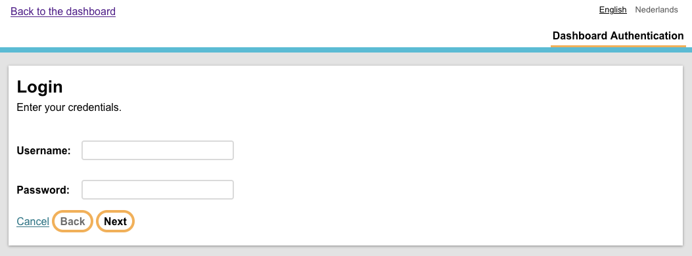
After a successful login you will see something that looks like this:
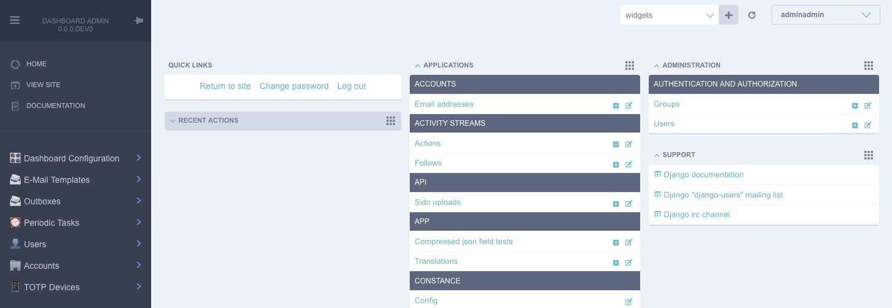
Go to “🎛️ Dashboard Configuration” in the left menu
Set up the “general dashboard settings”:
DASHBOARD_FRONTEND_URL
INTERNET_NL_API_URL
CREDENTIAL_CHECK_URL
INTERNET_NL_SCAN_TRACKING_NAME
Click the save button
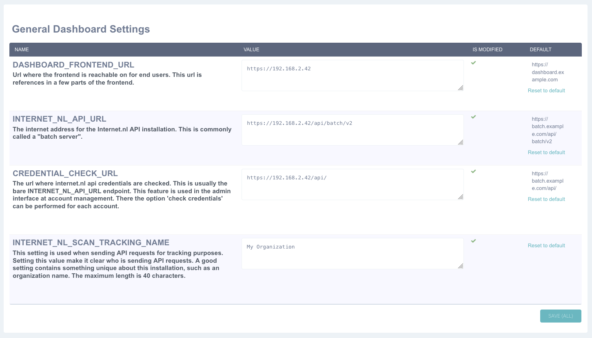
These settings can also be set using the command line, this saves some time clicking through the admin interface.
Use the following commands, of course with your own personal settings:
docker exec -ti internetnl-dashboard-backend-1 dashboard constance set DASHBOARD_FRONTEND_URL http://127.0.0.1
docker exec -ti internetnl-dashboard-backend-1 dashboard constance set INTERNET_NL_API_URL http://127.0.0.1:9000/api/batch/v2
docker exec -ti internetnl-dashboard-backend-1 dashboard constance set CREDENTIAL_CHECK_URL http://127.0.0.1:9000/api/
docker exec -ti internetnl-dashboard-backend-1 dashboard constance set INTERNET_NL_SCAN_TRACKING_NAME "My Dashboard Instance"
Examples of these settings for internet.nl servers are:
DASHBOARD_FRONTEND_URL https://dashboard.internet.nl
INTERNET_NL_API_URL https://batch.internet.nl/api/batch/v2
CREDENTIAL_CHECK_URL https://batch.internet.nl/api/batch/v2/requests
INTERNET_NL_SCAN_TRACKING_NAME “<organization name> Dashboard”
EMAIL_DASHBOARD_ADDRESS https://dashboard.internet.nl
Setup the API credentials for the account.
Go to the account management page
Click on the admin user
Setup the “internet nl api username” and “new password” field and click save
To test if the account was setup properly, use the ‘Check API credentials’
If the credentials are correctly configured the check will return a checkmark symbol, otherwise a cross symbol will be visible on the row of this account.
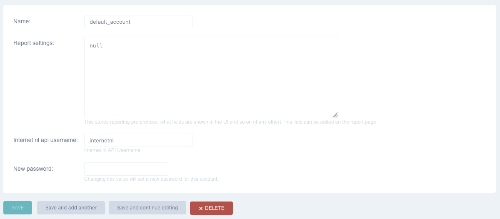
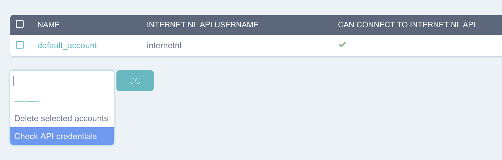
Note that the password in step 4.3 is being saved inside the database as an encrypted value. The key to that encryption was auto-generated using this setup. This key is stored inside a file, if you change it the currently stored passwords cannot be used anymore.
You are now set to perform your first scan.
1.3. 1.3 Performing your first scan¶
Visit the dashboard frontend and log in.
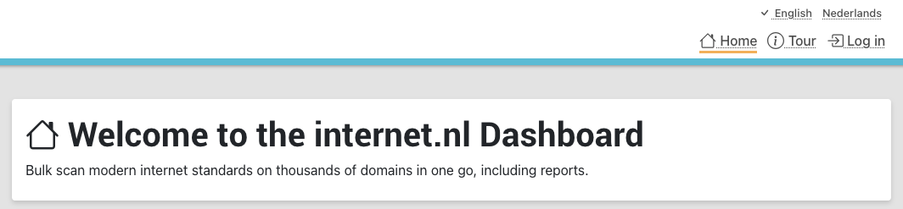
Go to ‘domains’
Create a new scan:
Click on ‘create new list’
Enter the name for the list
Set the list to scan both web and mail
Save the list
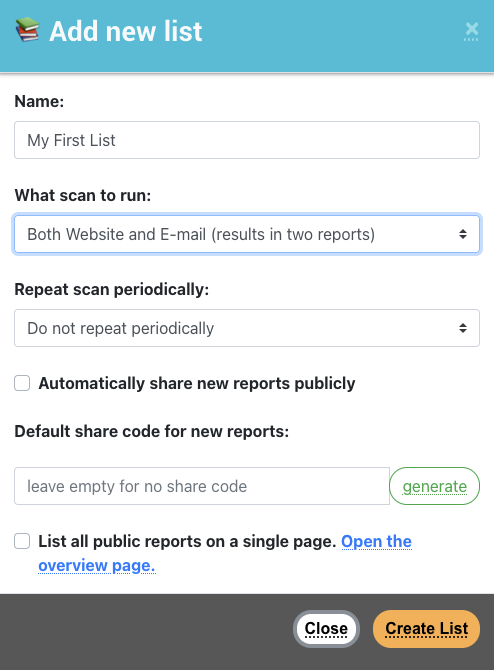
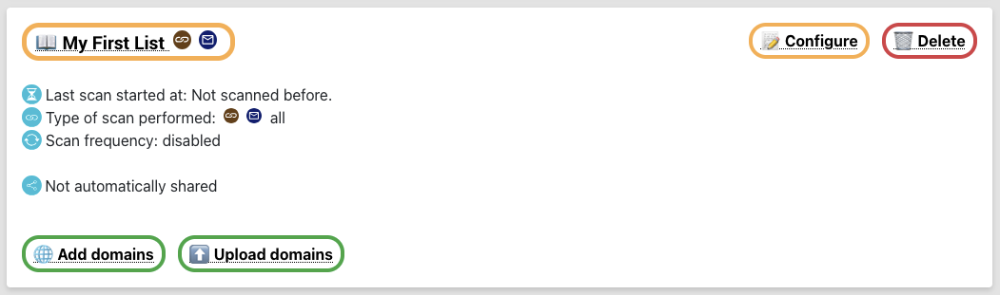
Add domains to the list
Click ‘add domains’
Add the domains in the text field
Click ‘add the above domains to the list’
After adding successfully, click ‘close’
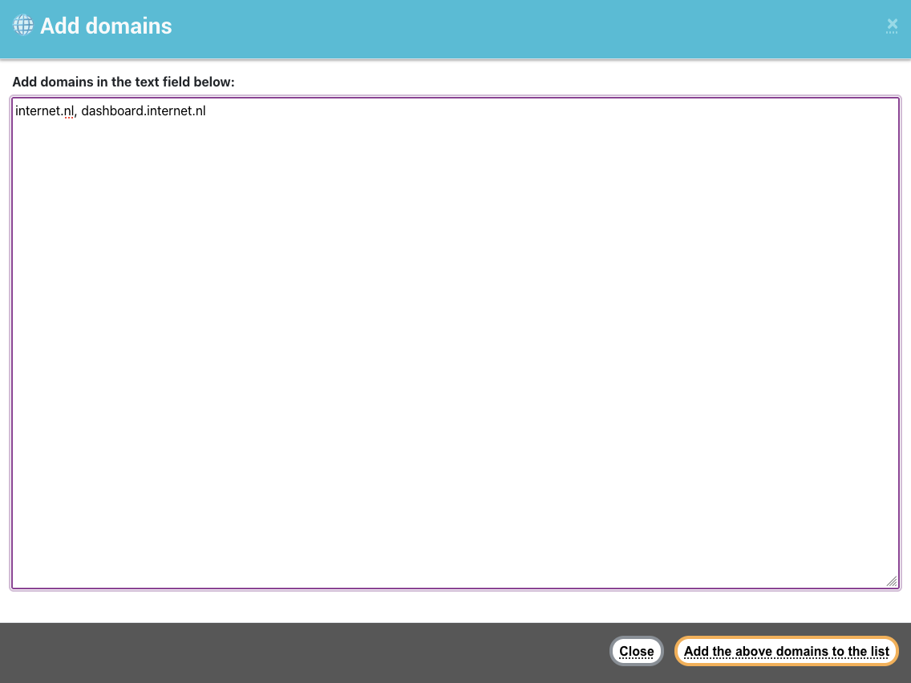
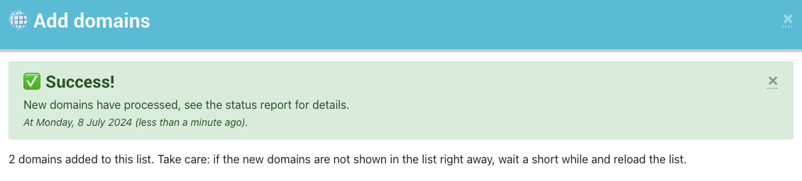
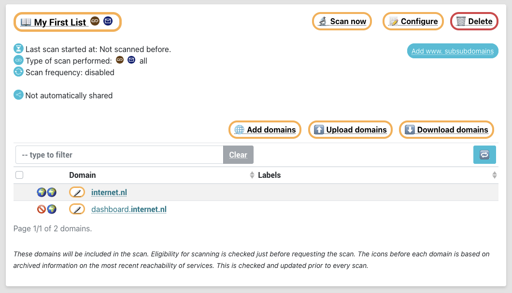
start a scan by clicking ‘scan now’ and confirming the scan
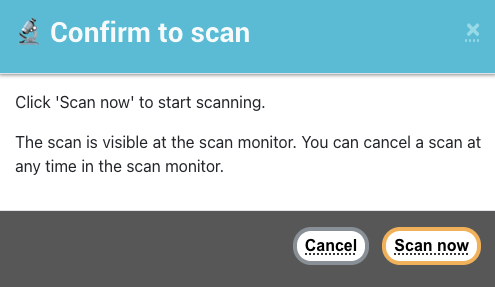
On the scan monitor page the list of currently running scans can be seen.
After a scan has finished a report will be ready.
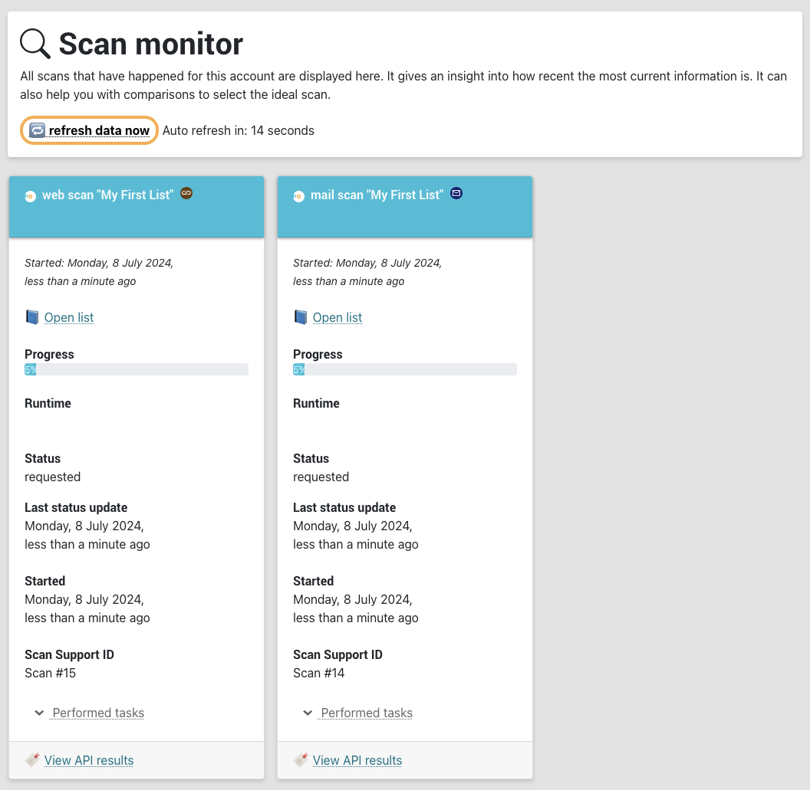
1.4. 1.4 Using a custom domain¶
You probably want to run the dashboard on your own domain. To allow this domain to be used in the front-end, you need to set the following (environment) variables with the host you need:
For example:
CSRF_TRUSTED_ORIGINS_DEFAULT_DOMAIN: https://example.com CSRF_TRUSTED_ORIGINS_WILDCARD_DOMAIN: https://*.example.com CORS_ALLOWED_DOMAIN: https://example.com
You can set these in the docker compose file in main/compose.yaml. Do so in the path: /services/backend/environment.
1.5. 1.5 Advanced configuration¶
1.5.1. 1.5.1 Setting up e-mail notification after scanning¶
After a scan completes it’s possible to receive an e-mail. An SMTP server has to be configured in the admin interface, here: http://localhost/admin/django_mail_admin/outbox/
Visit the admin interface on
/admin/and log in.In the sidebar click “📨 Outboxes”
3. Fill in the form with all SMTP details and click save. Only one outbox is needed. .. image:: docs/input/installation/email_add_outbox.png
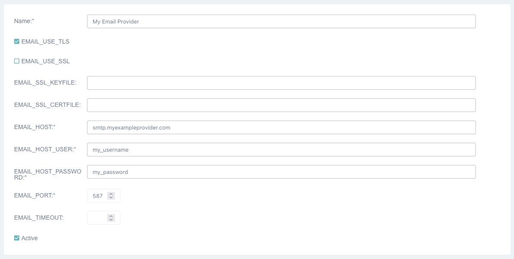
The e-mails that are being sent are stored as templates in the “📨 E-Mail Templates” section. The default language for templates is English and several templates are pre-installed to be customized. For more information about these templates check the 3 Email Templates chapter.
1.5.2. 1.5.2 Setting up subdomain suggestions¶
It’s possible to use subdomain suggestions when managing lists of urls. The exact instructions for running and installing this feature are to be documented.
In the admin interface on http://localhost/admin/constance/config/ you will find the possibility to use subdomain suggestions via a separate installation of the CTLSSA tool.
The CTLSSA tool can be found here and run via docker: https://github.com/internetstandards/Internet.nl-ct-log-subdomain-suggestions-api/
In the internet.nl dashboard settings, point the SUBDOMAIN_SUGGESTION_SERVER_ADDRESS setting to the CTLSSA instance.
1.6. 1.6 Background information¶
1.6.1. 1.6.1 Application component overview¶
The dashboard contains of three application components: dockerfile, backend and frontend.
The dockerfile will setup a complete dashboard with sample users and sample configuration. This is one command and should be run on a system that runs docker, colima or another similar tool.
The backend is where all logic happens. List creation, result processing, session management and such. A few parts look like the frontend: the login page, the password reset page and spreadsheet upload page. All other pages are either redirects or interaction via JSON calls.
The frontend is the place where a users maintain lists, start scans, view and share reports. This is (mostly) the ‘actual’ website for day to day use.
1.6.2. 1.6.2 Creating your own unique look and feel¶
The included default layout is an unbranded version of internet.nl, using the internet.nl styling. Only the logo’s and references have been disabled. The setting for using your own template is called ‘SITE_LAYOUT_NAME’ and is exposed to the backend and frontend. The dashboard has not been optimized for custom branding yet, so your mileage to implement this for your organization may vary.